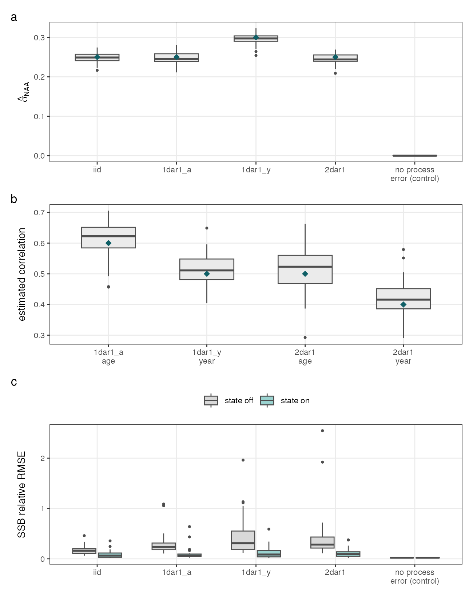

State-Space Numbers at Age
ak_state_space_naa_spatial_sim.RmdA stock lives in three regions with different fishing histories, and its survival carries process error correlated across those regions. However, in some cases, spatial models may not be feasible. The purpose of this vignette is to demonstrate how state-space treatment of numbers-at-age can in some cases, approximate spatial process error (e.g., through migration). Let us first set up a simulation in the following with three regions, 40 years, and 8 ages.
library(SPoRC)
n_regions <- 3; n_yrs <- 40; n_ages <- 8
waa <- 5 / (1 + exp(-3 * ((1:n_ages) - 3)))
mat <- 1 / (1 + exp(-3 * ((1:n_ages) - 3)))The operating model
Three regions, linked by modest movement, each with its own fishing history: one ramping up then easing off, one starting high and recovering, one flat throughout. These dynamics are generally unable to be represented within a single-region context.
f_hist <- list(
c(seq(0.02, 0.55, length.out = 24), seq(0.55, 0.20, length.out = 16)), # ramp then ease
c(seq(0.30, 0.06, length.out = 20), seq(0.06, 0.35, length.out = 20)), # dip then recover
rep(0.15, n_yrs) # flat
)Selectivity, weight and maturity at age are shared across regions.
The age dimension is the fifth, so a vector of values at age repeats
over the product of every earlier dimension; writing
rep(v, each = n_yrs) as a single-region model would
silently permute the ages once there is more than one region.
at_age <- function(v) array(rep(v, each = n_regions * n_yrs),
dim = c(1, n_regions, n_yrs, 1, n_ages, 1))
sel_at_age <- function(k, a50) array(rep(1 / (1 + exp(-k * ((1:n_ages) - a50))),
each = n_yrs * n_regions),
dim = c(1, n_regions, n_yrs, 1, n_ages, 1, 1))Then, let us set up the fishing mortality and survey observations. For the purposes of self and cross-testing to demonstrate features and identifiabiltiy of parameters, we will simulate extremely informative data in this case.
sim_list <- Setup_Sim_Dim(n_sims = 1, n_yrs = n_yrs, n_regions = n_regions,
n_ages = n_ages, n_lens = NULL, n_sexes = 1,
n_fish_fleets = 1, n_srv_fleets = 1, n_pop = 1)
sim_list <- Setup_Sim_Containers(sim_list)
sim_list <- Setup_Sim_Fishing(
sim_list = sim_list,
fish_sel_input = replicate(1, sel_at_age(3, 2)),
ret_sel_input = replicate(1, sel_at_age(3, 2)),
dmr_input = array(0, dim = c(n_regions, n_yrs, 1, 1, 1)),
Fmort_input = array(t(do.call(cbind, f_hist)), dim = c(n_regions, n_yrs, 1, 1, 1)),
ISS_FishAgeComps = array(400, dim = c(n_regions, n_yrs, 1, 1, 1, 1)))
sim_list <- Setup_Sim_Survey(
sim_list = sim_list,
srv_sel_input = replicate(1, sel_at_age(1, 3)),
ObsSrvIdx_SE = array(0.05, dim = c(n_regions, n_yrs, 1, 1)),
ISS_SrvAgeComps = array(400, dim = c(n_regions, n_yrs, 1, 1, 1, 1)))
sim_list <- Setup_Sim_Biologicals(
sim_list = sim_list,
natmort_input = replicate(1, array(0.25, dim = c(1, n_regions, n_yrs, n_ages, 1))),
WAA_input = replicate(1, at_age(waa)),
MatAA_input = replicate(1, at_age(mat)),
WAA_fish_input = replicate(1, array(rep(waa, each = n_regions * n_yrs),
dim = c(1, n_regions, n_yrs, 1, n_ages, 1, 1))),
WAA_srv_input = replicate(1, array(rep(waa, each = n_regions * n_yrs),
dim = c(1, n_regions, n_yrs, 1, n_ages, 1, 1))))
sim_list <- Setup_Sim_Tagging(sim_list = sim_list, use_conv_fish_tagging = 0)
# modest movement, so the regions are linked but keep their own histories
mv <- diag(n_regions) * 0.8 + 0.1; mv <- mv / rowSums(mv)
Movement <- array(0, dim = c(1, n_regions, n_regions, n_yrs, 1, n_ages, 1, 1))
for(y in 1:n_yrs) for(a in 1:n_ages) Movement[1, , , y, 1, a, 1, 1] <- mv
sim_list$Movement <- Movement
sim_list <- Setup_Sim_Rec(
sim_list = sim_list,
R0_input = replicate(1, array(5, dim = c(1, n_regions, n_yrs))),
ln_sigmaR = array(log(0.3), dim = c(2, 1, 1)),
recruitment_opt = "mean_rec",
init_age_strc = 1)Now, specifying Setup_Sim_NAA_state puts process error
on the numbers at age, independent over ages and years but correlated
across regions, with the three pairwise correlations set to 0.7, 0.2 and
0.5.
sim_list <- Setup_Sim_NAA_state(
sim_list,
NAA_re = "iid", # independent over the age-year grid
sigmaNAA = 0.30,
NAA_re_region = "us", # unstructured across regions
region_corr = c(0.7, 0.2, 0.5))
set.seed(2024)
om <- Simulate_Pop_Static(sim_list = sim_list, output_path = NULL)The draws come back on om$naa_eta, and the realized
correlations land close to what was asked for: 0.73, 0.10 and 0.41
against targets of 0.7, 0.2 and 0.5, over a single forty-year
realization.
Four ways to assess it
The estimation models are built from the same simulated observations.
dat <- simulation_data_to_SPoRC(sim_env = om, y = n_yrs, sim = 1)
# set up args for state-space mode and n regions
build_em <- function(d, n_reg, NAA_re = "none", NAA_re_region = "iid") {
comp_type <- if(n_reg > 1) "spltRspltS" else "agg"
biol_dim <- c(1, n_reg, n_yrs, 1, n_ages, 1)
vals <- function(v) array(rep(v, each = prod(biol_dim[1:4])), dim = biol_dim)
il <- Setup_Mod_Dim(years = 1:n_yrs, ages = 1:n_ages, lens = NULL, n_regions = n_reg,
n_sexes = 1, n_fish_fleets = 1, n_srv_fleets = 1, n_pop = 1,
natal_region = 1, verbose = FALSE)
il <- Setup_Mod_Rec(input_list = il, rec_model = "mean_rec", sigmaR_spec = "fix",
ln_sigmaR = array(log(0.3), c(2, 1, n_reg)), do_rec_bias_ramp = 0,
sigmaR_switch = 1, init_age_strc = 1, equil_init_age_strc = 2,
ln_global_R0 = log(5 * n_reg))
il <- Setup_Mod_Biologicals(
input_list = il, WAA = vals(waa), MatAA = vals(mat),
WAA_fish = array(vals(waa), dim = c(biol_dim, 1)),
WAA_srv = array(vals(waa), dim = c(biol_dim, 1)),
fit_lengths = 0, AgeingError = d$AgeingError, M_spec = "fix",
Fixed_natmort = array(0.25, dim = c(1, n_reg, n_yrs, n_ages, 1)),
NAA_re = NAA_re, NAA_re_region = NAA_re_region)
il <- Setup_Mod_Tagging(input_list = il, use_conv_fish_tagging = 0)
il <- Setup_Mod_Movement(
input_list = il, use_fixed_movement = 1, do_recruits_move = 0,
Fixed_Movement = if(n_reg == 1) NA else {
m <- diag(n_reg) * 0.8 + 0.1; m <- m / rowSums(m)
a <- array(0, dim = c(1, n_reg, n_reg, n_yrs, 1, n_ages, 1))
for(y in 1:n_yrs) for(x in 1:n_ages) a[1, , , y, 1, x, 1] <- m
a })
il <- Setup_Mod_Catch_and_F(
input_list = il, ObsCatch = d$ObsCatch, UseCatch = d$UseCatch, Use_F_pen = 1,
sigmaC_spec = "fix", ln_sigmaC = d$ln_sigmaC,
ln_sigmaF = array(log(1), dim = c(n_reg, 1, 1)),
ObsDiscard = d$ObsDiscard, UseDiscard = d$UseDiscard,
sigma_dmr_spec = "fix", dmr_mean_spec = "fix", ln_sigmaD = d$ln_sigmaD)
il <- Setup_Mod_FishIdx_and_Comps(
input_list = il, ObsFishIdx = d$ObsFishIdx, ObsFishIdx_SE = d$ObsFishIdx_SE,
UseFishIdx = array(0, dim = dim(d$UseFishIdx)),
ObsFishAgeComps = d$ObsFishAgeComps, ObsFishLenComps = NULL,
UseFishAgeComps = d$UseFishAgeComps,
UseFishLenComps = array(0, dim = dim(d$UseFishAgeComps)),
ISS_FishAgeComps = d$ISS_FishAgeComps, ISS_FishLenComps = NULL,
fish_idx_type = "biom", FishAgeComps_LikeType = "Multinomial",
FishLenComps_LikeType = "none",
FishAgeComps_Type = paste0(comp_type, "_Year_1-terminal_Fleet_1"),
FishLenComps_Type = "none_Year_1-terminal_Fleet_1")
il <- Setup_Mod_SrvIdx_and_Comps(
input_list = il, ObsSrvIdx = d$ObsSrvIdx, ObsSrvIdx_SE = d$ObsSrvIdx_SE,
UseSrvIdx = d$UseSrvIdx, SrvIdx_LikeType = "lognormal",
ObsSrvAgeComps = d$ObsSrvAgeComps, ObsSrvLenComps = NULL,
UseSrvAgeComps = d$UseSrvAgeComps,
UseSrvLenComps = array(0, dim = dim(d$UseSrvAgeComps)),
ISS_SrvAgeComps = d$ISS_SrvAgeComps, ISS_SrvLenComps = NULL,
srv_idx_type = "biom", SrvAgeComps_LikeType = "Multinomial",
SrvLenComps_LikeType = "none",
SrvAgeComps_Type = paste0(comp_type, "_Year_1-terminal_Fleet_1"),
SrvLenComps_Type = "none_Year_1-terminal_Fleet_1")
il <- Setup_Mod_Fishsel_and_Q(
input_list = il, fish_sel_model = "logist1_Fleet_1",
fish_fixed_sel_pars_spec = "est_shared_r", fish_q_spec = "est_shared_r",
use_fixed_ret_sel = 1)
il <- Setup_Mod_Srvsel_and_Q(
input_list = il, srv_sel_model = "logist1_Fleet_1",
srv_fixed_sel_pars_spec = "est_shared_r", srv_q_spec = "est_shared_r")
Setup_Mod_Weighting(
input_list = il, Wt_Catch = 1, Wt_FishIdx = 1, Wt_SrvIdx = 1, Wt_Rec = 1, Wt_F = 1,
Wt_FishAgeComps = array(1, dim = c(n_reg, n_yrs, 1, 1, 1)),
Wt_SrvAgeComps = array(1, dim = c(n_reg, n_yrs, 1, 1, 1)))
}The state is switched on through Setup_Mod_Biologicals,
with the same structure the operating model used.
spatial_state <- build_em(dat, n_regions, NAA_re = "iid", NAA_re_region = "us")ln_NAA holds the log numbers themselves rather than
deviations. It starts from an equilibrium decay built from
and
,
so the state needs nothing supplied by hand. What is still worth
carrying over is the fixed effects, taken from a deterministic pass of
the same model so both fits start from the same place.
warm_start <- function(il, il_det) {
det <- fit_model(il_det$data, il_det$par, il_det$map, random = NULL, silent = TRUE)
pl <- det$env$parList(det$env$last.par.best)
for(name in intersect(names(pl), names(il$par)))
if(length(il$par[[name]]) == length(pl[[name]])) il$par[[name]][] <- pl[[name]]
il
}
# nlminb stalls on the Laplace objective before the gradient is small, and Newton refinement is
# unavailable under random effects, so the outer optimization is restarted on the same object
fixed_of <- function(f) {
p <- f$env$last.par.best
if(length(f$env$random)) p[-f$env$random] else p
}
refit <- function(il, random = NULL, rounds = 3) {
f <- fit_model(il$data, il$par, il$map, random = random, silent = TRUE)
best <- fixed_of(f)
for(i in seq_len(rounds)) {
g <- max(abs(f$gr(best)))
if(g < 1e-4) break
o <- try(stats::nlminb(best, f$fn, f$gr,
control = list(iter.max = 1e5, eval.max = 1e5, rel.tol = 1e-15)), silent = TRUE)
if(inherits(o, "try-error") || max(abs(f$gr(o$par))) >= g) break
best <- o$par
}
list(obj = f, grad = max(abs(f$gr(best))), rep = f$report(f$env$last.par.best))
}The fourth model collapses the regional data into one stock: catch and the biomass index add across regions, and compositions are combined by weighting each region’s proportions by that region’s index.
aggregate_regions <- function(d) {
a <- d
a$ObsCatch <- array(apply(d$ObsCatch, 2:4, sum), dim = c(1, n_yrs, 1, 1))
a$UseCatch <- array(1, dim = dim(a$ObsCatch))
a$ln_sigmaC <- array(d$ln_sigmaC[1, , , , drop = FALSE], dim = dim(a$ObsCatch))
a$ObsSrvIdx <- array(apply(d$ObsSrvIdx, 2:4, sum), dim = c(1, n_yrs, 1, 1))
a$ObsSrvIdx_SE <- array(d$ObsSrvIdx_SE[1, , , , drop = FALSE], dim = dim(a$ObsSrvIdx))
a$UseSrvIdx <- array(1, dim = dim(a$ObsSrvIdx))
w <- d$ObsSrvIdx[, , 1, 1] # region by year weights
pool <- function(C) {
out <- array(0, dim = c(1, n_yrs, 1, n_ages, 1, 1))
for(y in 1:n_yrs) {
num <- colSums(C[, y, 1, , 1, 1] * w[, y]); out[1, y, 1, , 1, 1] <- num / sum(num)
}
out
}
a$ObsSrvAgeComps <- pool(d$ObsSrvAgeComps); a$ObsFishAgeComps <- pool(d$ObsFishAgeComps)
a$UseSrvAgeComps <- array(1, dim = c(1, n_yrs, 1, 1)); a$UseFishAgeComps <- a$UseSrvAgeComps
a$ISS_SrvAgeComps <- array(400 * n_regions, dim = c(1, n_yrs, 1, 1, 1))
a$ISS_FishAgeComps <- a$ISS_SrvAgeComps
for(name in c("ObsFishIdx", "ObsFishIdx_SE", "UseFishIdx"))
a[[name]] <- array(0, dim = c(1, n_yrs, 1, 1))
for(name in c("ObsDiscard", "ln_sigmaD", "UseDiscard"))
a[[name]] <- array(if(name == "ln_sigmaD") log(0.1) else 0, dim = c(1, n_yrs, 1, 1))
a
}
agg <- aggregate_regions(dat)
spatial_det <- build_em(dat, n_regions, "none")
agg_det <- build_em(agg, 1, "none")
fits <- list(
`spatial, no state` = refit(spatial_det, NULL),
`spatial + state` = refit(warm_start(build_em(dat, n_regions, "iid", "us"), spatial_det), "ln_NAA"),
`aggregated, no state`= refit(agg_det, NULL),
`aggregated + state` = refit(warm_start(build_em(agg, 1, "iid"), agg_det), "ln_NAA"))
truth <- colSums(om$SSB[1, , 1:n_yrs, 1])
for(name in names(fits)) {
ssb <- if(dim(fits[[name]]$rep$SSB)[2] > 1) colSums(fits[[name]]$rep$SSB[1, , ])
else as.vector(fits[[name]]$rep$SSB[1, 1, ])
re <- (ssb - truth) / truth
cat(sprintf("%-22s rel.RMSE %.3f median RE %+6.2f%% |grad| %.1e\n",
name, sqrt(mean(re^2)), 100 * median(re), fits[[name]]$grad))
}The fourth model collapses the regional data into one stock: catch and the biomass index add across regions, and compositions are combined by weighting each region’s proportions by that region’s index.
Results
Twelve replicates at each of four process error levels, including a control where the operating model carries none at all. Every model in this case converged. Spawning biomass is summed across regions and compared to the operating model’s truth over forty years.
| spatial, no state | spatial + state | aggregated, no state | aggregated + state | |
|---|---|---|---|---|
| 0.00 | +2.0% | +2.0% | +6.9% | +6.9% |
| 0.05 | +2.7% | +2.7% | +8.0% | +8.4% |
| 0.15 | +6.3% | +1.3% | +15.8% | +15.8% |
| 0.30 | +22.2% | +3.7% | +45.7% | +28.0% |
Several findings emerge. Differences are minimal for the single-region model when process error in the operating model is switched off, most likely because there is no demographic leakage in this case: the three areas are summed, so no fish leave the domain the model describes. Had the single-region model covered only one of the three areas instead, movement across its boundary would have been real, and the state would likely have reduced the bias there. As the process error grows it becomes apparent that turning the state on soaks up some of the single-region model’s misspecification, cutting the bias from 45.7 to 28.0 percent at the largest level.
The parameters of the process itself are also recoverable. Fitting a single-region model to data simulated from a single-region operating model (not shown in this case study here), across thirty replicates at each structure, the process error standard deviation and every correlation are estimated close to the values that generated them, and the standard deviation is estimated at exactly zero when the operating model carries no process error at all.
